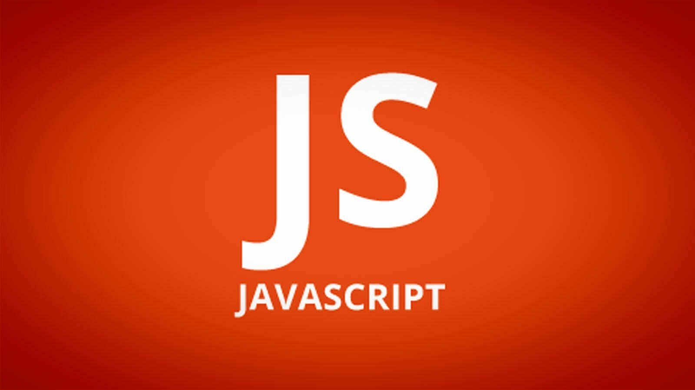
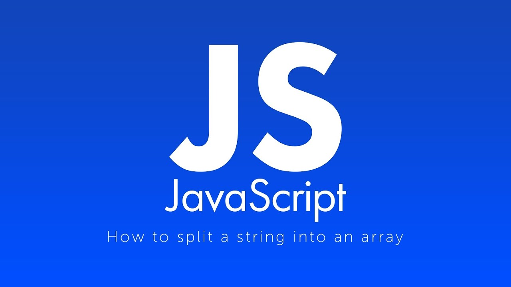

События, которые привели к появлению JavaScript, происходили в течение шести месяцев, с мая по декабрь 1995 года. Компания Netscape Communications находилась на передовой в области веб-технологий. Их браузер Netscape Communicator успешно конкурировал с NCSA Mosaic, первым популярным веб-браузером. Основатели компании Netscape были также участниками разработки Mosaic в начале 90-х годов. Теперь, обладая финансовыми средствами и независимостью, у них были все возможности для поиска новых способов развития веб-технологий. Именно это стало толчком к появлению JavaScript.
Брендан Айк, создатель JavaScript, должен был разработать для компании Netscape новый язык программирования под названием "Scheme для браузера". Scheme представляет собой динамичный и мощный диалект языка программирования Lisp с упрощенным синтаксисом. Интернету требовался язык, который был бы простым в освоении, динамичным, кратким и мощным, а Брендан Айк не упустил возможности поработать над таким проектом, присоединившись к команде разработчиков. Помимо этого, улучшилась скорость работы, и процесс установки программного обеспечения стал гораздо более простым.
Команде было поставлено задание создать работающий прототип за кратчайшие сроки. В то время Sun Microsystems завершала разработку своего языка программирования Java, который изначально назывался Oak. Компания Netscape Communications уже готовилась заключить контракт с Sun Microsystems, чтобы сделать Java доступным в своем браузере. Так зачем же нужен был Mocha (первоначальное название JavaScript)? Почему было принято решение создать совершенно новый язык программирования, когда уже была готовая альтернатива? Дело в том, что Java не была адаптирована под целевую аудиторию, на которую был ориентирован Mocha - скриптеры, любители и дизайнеры. Java была слишком крупной и сложной, чтобы выполнять такие задачи. Основная идея заключалась в том, что Java предназначалась для крупных разработчиков и профессиональных программистов, тогда как Mocha должен был использоваться для более мелких скриптовых задач. Другими словами, Mocha должен был стать скриптовым компаньоном для Java, подобно тому, как взаимодействуют C/C++ и Visual Basic на платформе Windows.
JavaScript — avaScript - это язык программирования с динамической неявной типизацией, автоматическим управлением памятью и прототипным наследованием.
JavaScript разделяется на три отдельные части:
Диаграмма типов JavaScript выглядит примерно так:
При правильном использовании этот язык может стать мощным инструментом для разработчика, но его применение также сопряжено с определенными рисками. Для предотвращения ошибок и проблем важно учитывать возможные трудности и принимать их во внимание при разработке проекта.
Рассматривая цели и применение JavaScript, следует отметить, что на протяжении 21 века он получил широкое распространение. Он используется для разработки разнообразных приложений. Согласно результатам проведенных исследований, JavaScript активно применяется в следующих сферах:
JavaScript наиболее востребован в сфере веб-разработки. Программист, использующий JS, способен создавать не только веб-приложения, но и небольшие игры, а также полноценные веб-сайты или одностраничные приложения. Важнейшие области практического применения JavaScript - это клиентская и серверная разработка.
Язык JS достаточно легко изучить. Его удобство обосновывается:
Прежде чем изучать JavaScript, важно освоить HTML и CSS, а также разобраться в основах верстки. Это позволит даже начинающему разработчику быстро приобрести опыт и обеспечит работой на протяжении ближайших 10-15 лет.
Строки – это последовательность символов в одинарных или двойных кавычках. Принципиальной разницы между ними нет.
|
'Одна строка' "Другая строка" // кавычки внутри строк необходимо экранировать // двойные, если строка в двойных кавычках "Ресторан \"У конца вселенной\"" // одинарные, если в одинарных 'I\'m Groot' // строки могут содержать управляющие последовательности "Первая строка\Вторая строка" |
|
// приводятся к false в логическом контексте 0 -0 NaN undefined null // остальные значения становятся tru |
|
const foo1 = () => //... } // можно даже в одну строку const foo2 = () => doSomething() // с передачей параметра const foo3 = param=> doSomething(param) // неявный возврат значения const foo4 = param => param * 2 foo4(5) // 10 |

| № | Тип данных | |
|---|---|---|
| 1 | Undefined (Неопределённый тип) | typeof instance === "undefined" |
| 2 | Boolean (Булев, Логический тип) | typeof instance === "boolean" |
| 3 | Number (Число) | typeof instance === "number" |
| 4 | String (Строка) | typeof instance === "string" |
| 5 | BigInt | typeof instance === "bigint" |
| 6 | Symbol (в ECMAScript 6) | typeof instance === "symbol" |
| 7 | Null (Null тип ) | typeof instance === "object" |
| 8 | Object (Объект) | typeof instance === "object" |
Использованные теги:
Использованные css-свойства: